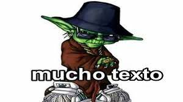

About
 Home
Home Get to School
Get to School About
About Socials
SocialsI am Tommy Blount, I am 15 and a student at York Tech School of Technology. I am in the IT program. I have not done much programming, but I have on and off been programming a couple things for the last few years. This website is for my programming class so that we can learn HTML, CSS, and some JS. The "Get to School" tab has the RPGMaker game that we have also been working on. Seeing as we don't have a full year to work on this, the game might not get finished. If I am able to, over the summer I might expand on it. If you have any feedback about the game or website, the best ways to contact me are in the "socials" tab.
